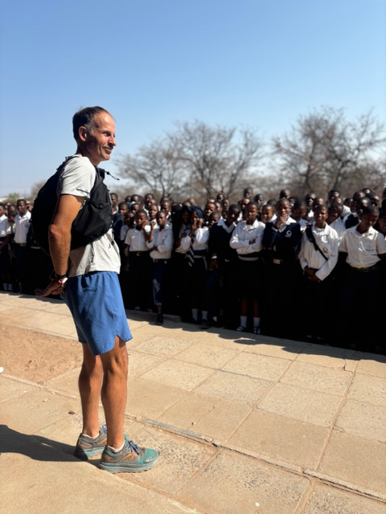
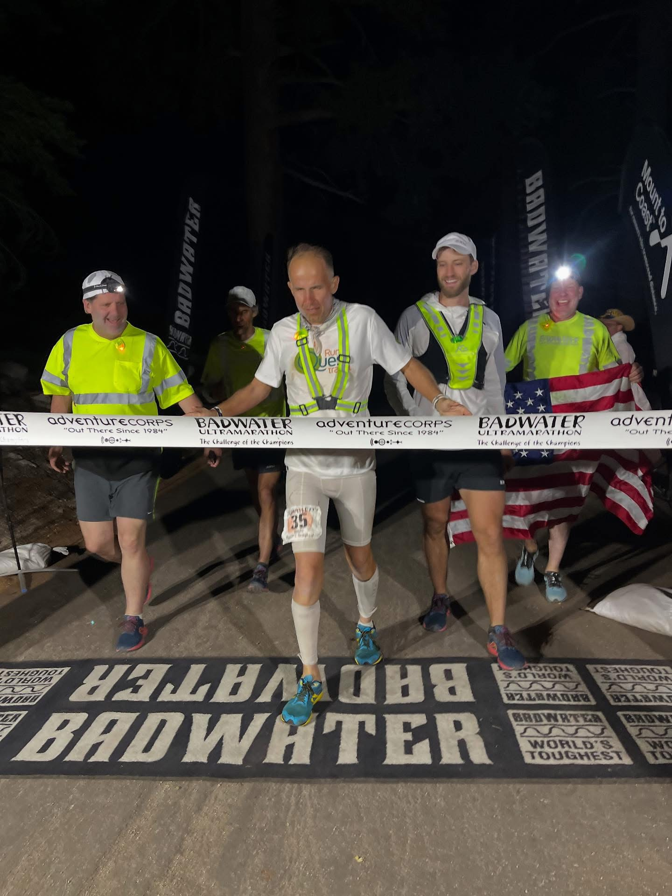

02 / The duality

Teacher by day
He teaches high school in Cincinnati and run-commutes three miles each way. He calls every student a sequoia — “so much potential in front of you.”

Record holder by the fourth night
Fifteen Badwater 135 starts, two wins. An Appalachian Trail thru-run in 49 days, then Badwater five days later.
Plant-based since 1998
Vegetarian at 19 after his mother’s stroke, vegan through college. He calls it the single most important ingredient to his longevity in the sport.